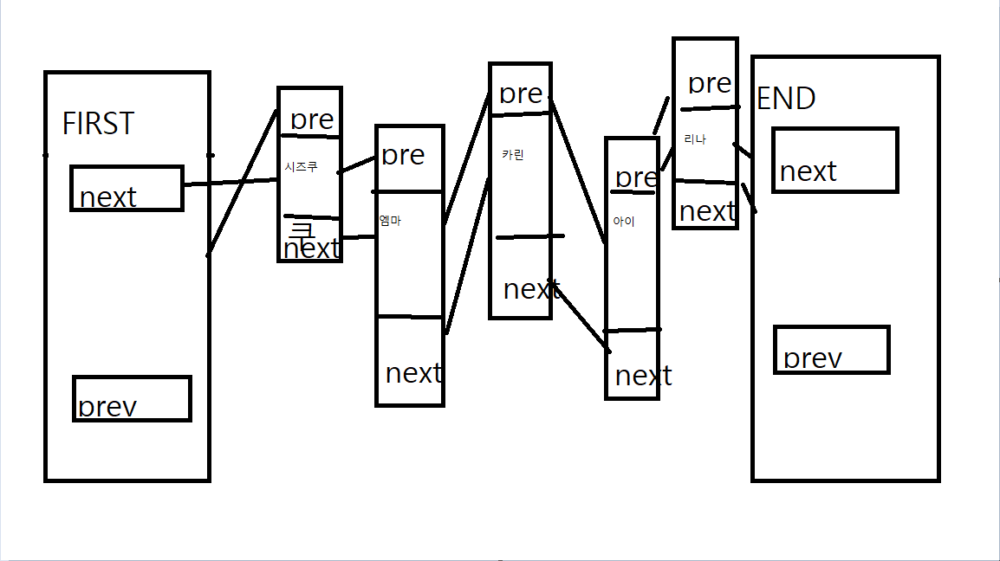

소스코드옆에 있는 이 버튼을 눌러주세요.
그래서 배열을 지울때는, 앞 값을 하나씩 당겨 그 값에 덮어 쓰는 방법을 사용합니다.
1. 리스트
1-1. 리스트란
list, 영단어적 뜻으로는 목록, 명단이라는 뜻입니다.
저번 시간에 배운 배열과 링크드리스트처럼 여러 개의 변수를 저장해놓은 목록을 의미합니다.
니지가사키 스쿨아이돌 멤버의 목록이나, 숭실대학교 학과 목록 등 우리는 세상에서 많은 정보를 리스트를 통해 표현합니다.
2. 링크드리스트
2-1. 배열로 나타낸 리스트
배열은 크기가 정해져있는 정적 변수입니다.
구현은 쉬우나, 저장 공간이 정해져 있고 값을 뺄 경우, 그 자리를 다른 값으로 채워주지 않으면 배열에 빈곳이 생긴다는 단점이 있습니다. 하지만 값을 대입할 땐 매우 쉽다는 장점이 있습니다.
void main(){
string kasumings[4]=["rina","kasumi","emma","kanata"];
cout <<kasumings[1] << endl;
kasumings[1] = "Ayumu";
cout <<kasumings[1] << endl;
}
버튼을 클릭해보세요.
void remove(int index){
if ( !isEmpty() && 0 <= index && index < length ) {
for ( int i = index + 1 ; i < length ; i ++)
data [ i - 1 ] = data [i] ;
length--;
}
else error ;
for ( int i = index + 1 ; i < length ; i ++)
data [ i - 1 ] = data [i] ;
length--;
}
else error ;
}
- index: 배열을 추가할 위치를 기록해두는 변수입니다. 배열의 길이보다 크거나 같다면 범위를 벗어나기에 에러를 띄웁니다.
- length: 배열의 총 길이 즉 크기를 의미합니다.
2-2. 랑크드리스트로 나타낸 리스트
이렇게 배열의 단점을 해결하기 위해 나온 자료구조가 링크드리스트입니다.
동적 할당으로 저장공간을 잡기 때문에, 컴퓨터 사양이 허락하는 한 계속 값을 늘릴 수 있지만, 구현이 어렵다는 단점이 있습니다.

기본적인 링크드리스트의 소스 코드입니다.
링크드리스트 구현한 리스트의 값 삭제 방법입니다.
void removefun( ){
if (prev != NULL) prev->next = next ;
if (next != NULL) next->prev = prev ;
delete this ;
}
-
prev: 이 node에서 전에 붙어있던 node를 말합니다. 전 node가 null이라면 앞에 아무것도 없다는 뜻이기 때문에 조건문에서 걸러줍니다.
전 node에 다음 node를 연결해주면서 지금 지우고자 하는 값을 붕 띄워줍니다. -
next: 이 node에서 다음에 붙어있던 node를 말합니다. 다음 node가 null이라면 앞에 아무것도 없다는 뜻이기 때문에 조건문에서 걸러줍니다.
다음 node에 전 node를 연결해주면서 지금 지우고자 하는 값을 붕 띄워줍니다.
void insertNext( Node2 * n ){
if (n != NULL) {
n -> prev = this ;
n -> next = next ;
if(next != NULL) next -> prev = n;
}
}
-
prev: 이 node에서 전에 붙어있던 node를 말합니다. 전 node가 null이라면 앞에 아무것도 없다는 뜻이기 때문에 조건문에서 걸러줍니다.
전 node에 다음 node를 연결해주면서 지금 지우고자 하는 값을 붕 띄워줍니다. -
next: 이 node에서 다음에 붙어있던 node를 말합니다. 다음 node가 null이라면 앞에 아무것도 없다는 뜻이기 때문에 조건문에서 걸러줍니다.
다음 node에 전 node를 연결해주면서 지금 지우고자 하는 값을 붕 띄워줍니다.
3. 느낀점
저번 주에 배운 내용이라 겹치는 부분이 있어, 이해하는데 어려움이 없었습니다.